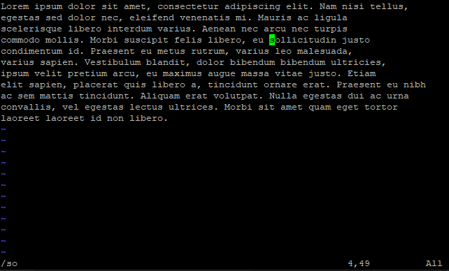
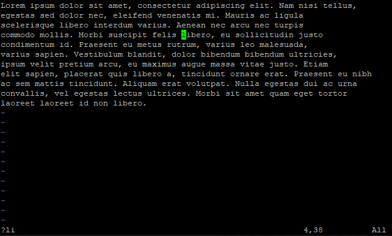

In addition to last line mode, vim also has edit mode, both of which complement each other.
We continue to use the test content we created earlier.
Save and Quit the File
1
2
vim vim_file # Open the file and do some changes
ZZ # Press Shift Key and Double Click Z Key, this will save the changes and quit the file
Searching
Here are two ways to search content in edit mode:
Option
Meaning
?PATTERN
Matching backward, press N to continue looking backward.
/PATTERN
Matching forward, press n to continue looking forward.
Search Forward
We use the / symbol to look forward for the specified content:

Search forward for the content so
Search Backward
We use the ? symbol to look backward for the specified content:

Search backward for the content li
Cursor Movement
Here are some commands to move the cursor in edit mode:
Based On Character
Here are some movement commands based on character:
Option
Meaning
h
Move cursor to the left character.
Nh
Move cursor to the Nth character on the left.
l
Move cursor to the right character.
Nl
Move cursor to the Nth character on the right.
j
Move cursor to the above character.
Nj
Move cursor to the Nth character on the above.
k
Move cursor to the below character.
Nk
Move cursor to the Nth character on the below.
Based On Word
Here are some movement commands based on word:
Option
Meaning
b
Move cursor to the start of the current or left word.
Nb
Move cursor to the start of the Nth word on the left.
w
Move cursor to the start of the right word.
Nw
Move cursor to the start of the Nth word on the right.
e
Move cursor to the end of the current or right word.
Ne
Move cursor to the end of the Nth word on the right.
Based On Line
Here are some movement commands based on line:
Option
Meaning
0
Move to the start of the line.
^
Move to the start of the non-white space character of the line.
$
Move to the end of the line.
Based On Context
Here are some movement commands based on context:
Option
Meaning
NG
Move to the Nth line.
Yanking (Copying) and Pasting
Here are some commands for yanking and pasting content:
Copy Words
Option
Meaning
yb
Copy to the start of the left word.
Nyb
Copy to the start of the Nth word on the left.
yw
Copy to the start of the right word.
Nyw
Copy to the start of the Nth word on the right.
ye
Copy to the end of the right word.
Nye
Copy to the end of the Nth word on the right.
Copy Lines
Option
Meaning
yy
Copy the line where the cursor is located.
Nyy
Copy from the line where the cursor is located to the Nth line below it.
Pasting Words
Option
Meaning
P
Paste the content before the cursor.
p
Paste the content after the cursor.
Pasting Lines
Option
Meaning
P
Paste the content before the line where the cursor is located.
p
Paste the content after the line where the cursor is located.
Deletion
Here are some commands for deleting content:
Delete Characters
Option
Meaning
x
Delete the character where the cursor is located.
Nx
Delete from the character where the cursor is located to the Nth character on the right.
Delete Words
Option
Meaning
db
Delete to the start of the left word.
Ndb
Delete to the start of the Nth word on the left.
dw
Delete to the start of the right word.
Ndw
Delete to the start of the Nth word on the right.
de
Delete to the end of the right word.
Nde
Delete to the end of the Nth word on the right.
Delete Lines
Option
Meaning
dd
Delete the line where the cursor is located.
Nyy
Delete from the line where the cursor is located to the Nth line below it.
Change to Insert Mode After the Deletion
Delete Words Before the Change
Option
Meaning
cb
Delete to the start of the left word.
Ncb
Delete to the start of the Nth word on the left.
cw
Delete to the start of the right word.
Ncw
Delete to the start of the Nth word on the right.
ce
Delete to the end of the right word.
Nce
Delete to the end of the Nth word on the right.
Delete Lines Before the Change
Option
Meaning
cc
Delete the line where the cursor is located.
Ncc
Delete from the line where the cursor is located to the Nth line below it.
Replacement
Here are some commands for replacing content:
Option
Meaning
R
Replace the character at the cursor position with the entered character.
rC
Replace the character at the cursor position with character C.
NrC
Replace the character from the cursor position to the Nth character on the right with character C.
Undoing, Resuming and Operation Duplication
Here are some commands for undo, resume and duplicate the last operation:
Option
Meaning
u
Undo the last edit mode operation.
Nu
Undo the last Nth edit mode operations.
Ctrl + r
Resume the undo operation.
.
Duplicate the last operation.
References
VIM Documentation
If you think the content of this article has helped you, and if you would like some more high-quality materials in the near future, please give me some modest support.
Buy me a coffee